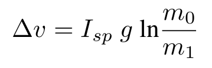

PDDL+ Benchmarks
Download our benchmark domains from DiNo's Github repository.
Linear Generator
This benchmark problem revolves around refueling a diesel-powered generator, which has to run for a given duration without overflowing or running dry. To test scalability, the number of tanks is increased while simultaneously decreasing the initial fuel level. In this variant of the domain, both the refueling and the fuel consumption equations are linear.
Non-Linear Generator (Toricelli Version)
This variant of the Generator domain follows the same principle and goal as the Linear Generator, though the system dynamics are governed by non-linear equations according to Toricelli's Law.
Linear Solar Rover
A planetary rover has to transmit data which requires a sufficient amount of energy. To generate enough energy the rover can choose to use its batteries or utilise its solar panels. However, the initial state is at night time so the rover has to wait until daytime to be able to gather enough energy to send the data. The sunshine event is triggered by a TIL at a certain time point. The set of problem instances for this domain has the TIL occur at an increasingly further time point.
Non-Linear Solar Rover
An extedned version of the domain where instead of instantaneous increase in rover energy, the sunshine TIL triggers a process charging the rover’s battery at an exponential rate: ∆E = 0.0025E2
Powered Descent
A new domain which models a powered spacecraft landing on a given celestial body. The vehicle gains velocity due to the force of gravity. The spacecraft can fire thrusters to decrease its velocity. The thrust action duration is flexible and is dependent on the available propellant mass. The change of spacecraft velocity (Δv) is calculated via Tsiolkovsky rocket equation [Turner, 2008]:

where Isp is the specific impulse of the thruster, g is the force of gravity, m0 and m1 are the total mass of the spacecraft before and after firing thrusters, respectively.
The scalability of the problem is
Car
In this domain, a car has to drive a given distance from a standstill. The car can accelerate and decelerate within the set bounds. Scalability is tested by increasing the bounds on the car's acceleration. Processes model changes in velocity, distance, and the wind resistance.